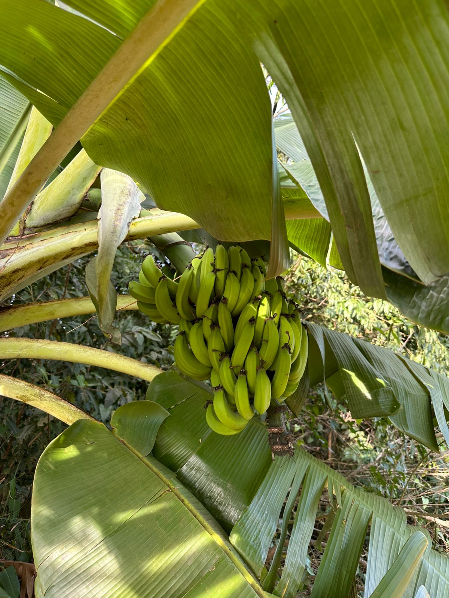

Foto de Enilda Pagliari

Plantação de salada na sua propriedade

"Aprendi a valorizar cada alimento ao visitar uma pequena fazenda. É um trabalho de muito esforço e dedicação!"
"Levar energia elétrica até áreas rurais foi um marco na vida da nossa comunidade. Mudou tudo."
"Agora entendo como a cidade depende do campo para continuar se desenvolvendo."
O campo é ecenssial para a economia e para a vida na terra!
Em 2024, a produção agropecuária brasileira teve um valor bruto de aproximadamente R$ 1,291 trilhão, com um crescimento de 0,5% em relação a 2023. É nítido que o campo, diretamente, abastece as zonas urbanas, principalmente com alimentos e matérias-primas, como frutas, verduras, grãos, carnes, leite, e matérias-primas para a indústria, como algodão e madeira.